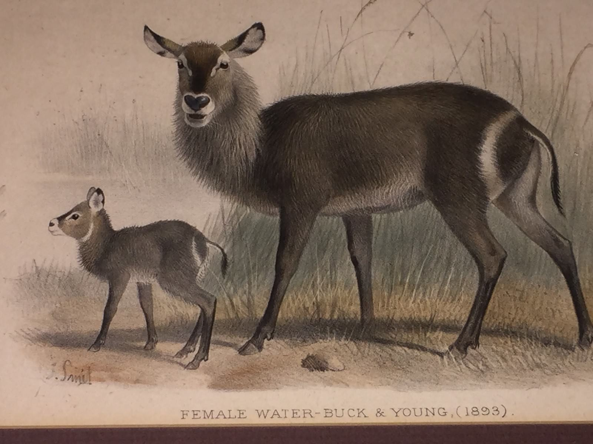
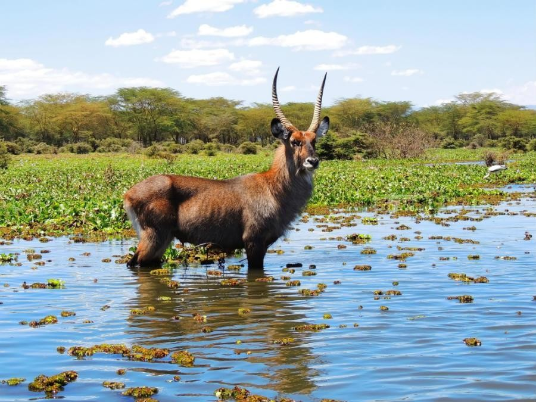
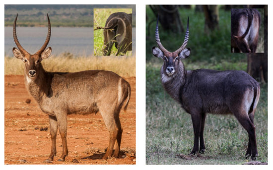
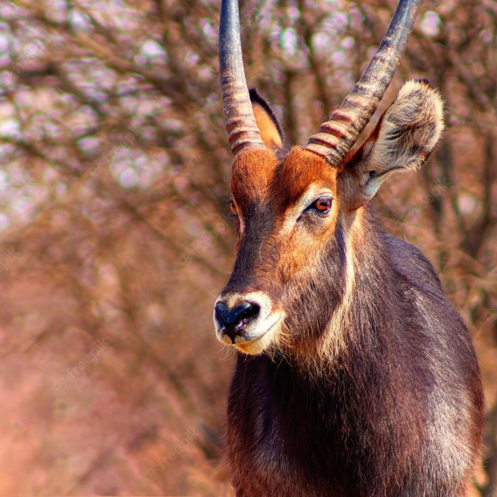
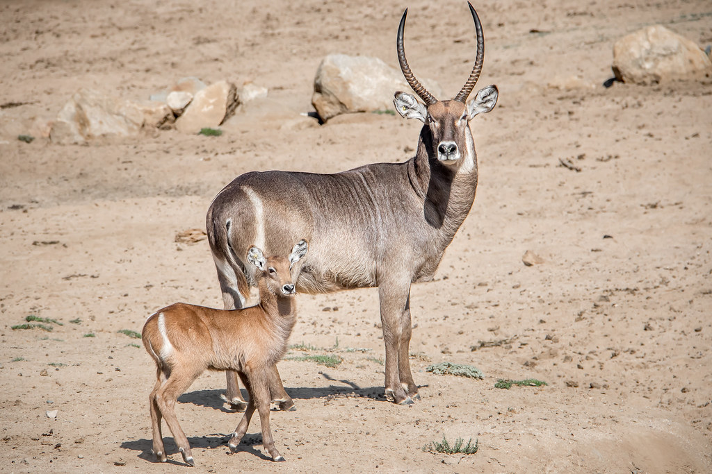

<!DOCTYPE html>
<html lang="en">
<head>
    <meta charset="UTF-8">
    <meta name="viewport" content="width=device-width, initial-scale=1.0">
    <title>My Blog about Waterbucks</title>
    
    <link rel="stylesheet" href="style.css">
    
    
</head>
</html>

<body>

<div class="header">
  <h1>The Waterbuck</h1>
  <p>ORIGIN, HABITAT AND TYPES</p>
</div>

<div class="topnav">
  <a href="http://127.0.0.1:5500/create-a-blog-post-e227420/profile.html">PROFILE</a>
  <a href="http://127.0.0.1:5500/create-a-blog-post-e227420/types.html">TYPES</a>
  <a href="#">Link</a>
  <div class="search-container" style="float:right;;">
    </style>
    <form action="/action_page.php">
      <input type="text" placeholder="Search.." name="search">
      <button type="submit"><i class="fa fa-search"></i></button>
    </form>
  </div>
</div>

<div class="row">
  <div class="leftcolumn">
    <div class="card">
      <h2>Origin</h2>
      
      <h6>FEMALE WATER-BUCK & YOUNG, (1893) </h6> 
      <p>The waterbuck is a large antelope species found in sub-Saharan Africa. It is believed to have originated in the eastern and southern regions of the African continent. Over millions of years, the waterbuck species evolved and adapted to the diverse habitats found in these regions, becoming the animal we recognize today. As with many species, the exact origins of the waterbuck can be traced through processes that occurred over a long period of time within Africa. </p>
      <p>The origin of the waterbuck, in terms of its evolutionary history, can be traced back to Africa, where it has been native for millions of years.</p>
    </div>
    <div class="card">
      <h2>HABITAT</h2>
      <h6>WHERE DO WATERBUCKS LIVE?</h6>
      
      <p>The range of the Waterbuck includes a variety of habitats such as savannas, grasslands, and woodland areas near water sources like rivers and lakes. Waterbucks are widely distributed in eastern and southern Africa, including countries like Kenya, Tanzania, Zambia, Angola, Namibia, Botswana, Zimbabwe, Mozambique, and South Africa. They are well adapted to a semi-aquatic lifestyle and are often found near lakes, rivers, and other water bodies, which helps them evade predators.</p>
      <p>As its name would indicate, the waterbuck inhabits areas that are close to water in savanna grasslands, gallery forests, and riverine woodlands south of the Sahara. Such habitats not only provide sustenance but long grasses and watery places in which to hide from predators.</p>
    </div>
  </div>
  <div class="rightcolumn">
    <div class="card">
      <h2>TYPES</h2>
      
      <p>We focus on the two main types of waterbuck: the Common Waterbuck and the Defassa Waterbuck. Common waterbucks have a white ring on their rump, while Defassa Waterbucks do not have this marking.
        How this comes and many more interesting facts are found under "TYPES".
      </p>
    </div>
    <div class="card">
      <h3>My favourite pictures</h3>
      
      
      
    </div>
  </div>
</div>

<div class="footer">
  <h3><small>My Blog</small></h3>
      <p>created by Floria Locher, 1E, Gymnasium Muttenz</p> 
</div>
</body>
   
</html>
